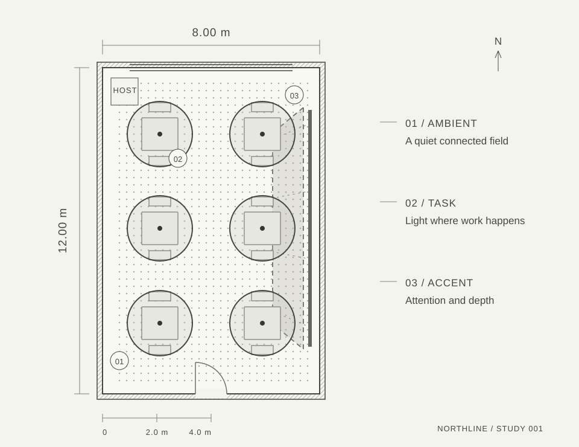
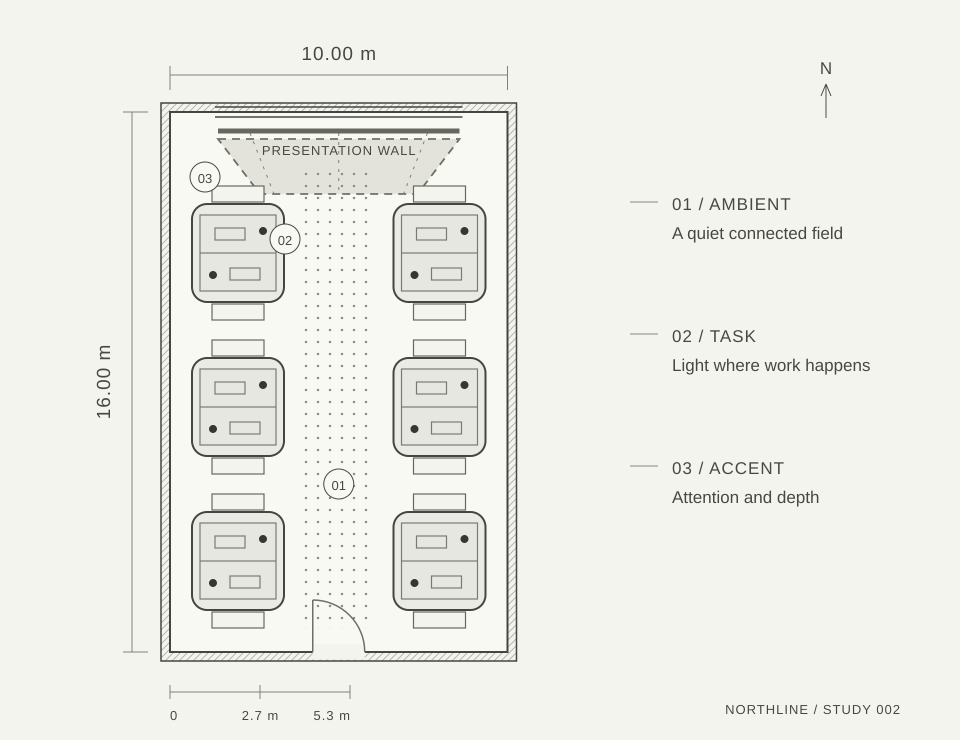
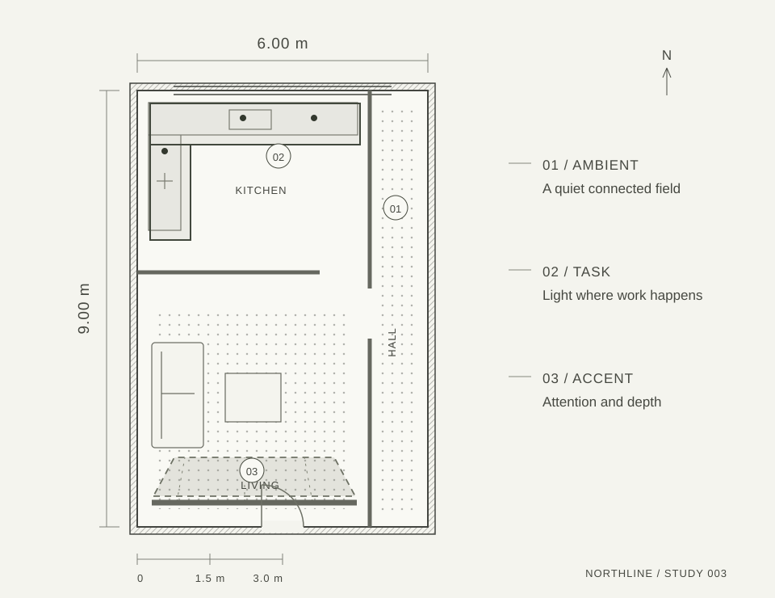

01 / Ambient02 / Task03 / Accent
001 / Hospitality8 × 12 m
A quieter table
Light at the table. A lower background. Depth along the wall.
Explore this studyIndependent architectural
lighting advisory

We consider how a room is used, where attention belongs, and what the evening should feel like. Lighting advice for the spaces of everyday life.
Explore the lighting studiesThree original spatial studies.
One way to begin a conversation.
Selected studies / 001–003
Light at the table. A lower background. Depth along the wall.
Explore this study
A place to concentrate, move easily, and share ideas after dark.
Explore this study
From a useful kitchen to a softer hallway and a small point of interest.
Explore this studyOur way of looking
The connected background that helps a room feel whole.
Useful light close to reading, making, cooking, or meeting.
Attention on a surface, an object, or an architectural detail.
Begin with your space
Compare a study, name your project, and describe the change you want. Prepare a brief you can keep in this browser.